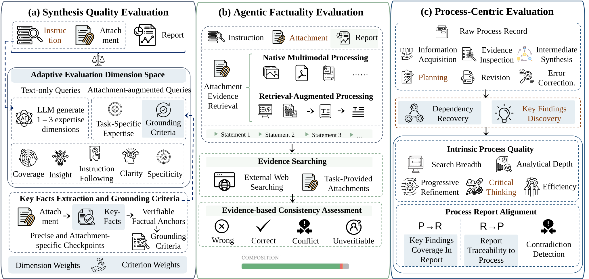

MiroEval
A holistic benchmark for deep research systems that evaluates not just what they write, but whether it's factually grounded and how they research — featuring adaptive rubrics, agentic fact verification, multimodal tasks, and process-level auditing.
Bridging the Evaluation Gap for Deep Research
Recent advancements have empowered Large Language Models to perform increasingly sophisticated tasks, particularly in the domain of deep research. Current benchmarks are often hampered by prohibitive human-expert costs and static evaluation dimensions that lack the granularity needed for multimodal or domain-specific analysis. We introduce MiroEval, an automated agentic framework designed to bridge these gaps. MiroEval features a high-quality benchmark of 100 tasks derived from real-world interactions, supporting native multimodal inputs. Our evaluation pipeline integrates three key innovations: Comprehensive Adaptive Point-wise Quality Evaluation for dynamic rubric generation, Agentic Factuality Evaluation for verifying uncited claims against multimodal evidence, and Process-Centric Evaluation for auditing research trajectories. Experiments across nine leading systems identify OpenAI Deep Research and MiroThinker-1.7 as top-tier performers and reveal a strong positive correlation between process quality and output reliability. Notably, our findings indicate that the primary risk to system reliability has shifted from "direct hallucination" to "insufficient grounding," particularly in specialized scenarios requiring complex multimodal analysis.
Query Distribution Overview — (a) Domain x Task sunburst, (b) Domain distribution, (c) Task type distribution across 100 benchmark queries.
Three-Layered Evaluation Pipeline
MiroEval assesses deep research systems across three complementary dimensions, capturing both the quality of the final output and the research process itself.
Report Quality
Comprehensive Adaptive Point-wise Quality Evaluation that dynamically generates task-specific dimensions, criteria, and weights. Supports both text-only and attachment-augmented queries with grounding criteria.
Agentic Factuality
An evaluation agent decomposes reports into verifiable statements, retrieves evidence from web and attachments via dual-source RAG, and assesses consistency with four-label classification.
Process-Centric
Audits the research trajectory by decomposing it into atomic units, evaluating intrinsic quality across five dimensions, and measuring alignment between process findings and the final report.

Overview of the MiroEval evaluation pipeline — integrating Report Quality, Agentic Factuality, and Process-Centric evaluation.
Dual-Path Query Construction
100 high-quality tasks assembled from two complementary sources with rigorous human verification.
65 Curated Queries
Rewritten from patterns observed during internal testing of MiroMind's deep research system. Covers text-only and multimodal interactions with privacy filtering, entity replacement, and feature-balanced routing across 6 difficulty-stratified rewriting strategies.
35 Trend-Grounded Queries
Produced by a fully automated pipeline grounded in real-time web trends. 180 candidates are filtered through three stages: search validation (84.4%), deep-research necessity (63.2%), and inverse quality assessment (52.1%), yielding 35 final queries.

Overview of the dual-path query construction pipeline including user-derived curation and automated trend-grounded generation.
Human Verification Results
| Metric | User-Derived | Auto-Generated | Aggregated |
|---|---|---|---|
| Fleiss' κ (validity) | 0.83 | 0.79 | 0.81 |
| Fleiss' κ (non-triviality) | 0.78 | 0.74 | 0.76 |
| Majority-vote precision | 94.0% | 90.0% | 92.0% |
| Unanimous agreement | 86.0% | 82.0% | — |
Three annotators with graduate-level research experience independently assess each query on validity and non-triviality.
What We Discovered
Rankings Shift Across Dimensions
Kimi-K2.5 achieves the highest Report score among non-MiroThinker systems at 75.7, yet its Factuality ranks near the bottom. Manus obtains the lowest Report at 55.4, yet its Factuality surpasses several stronger-report systems.
Process Predicts Outcome
The top three systems on Process (MiroThinker-H1, OpenAI, MiroThinker-1.7) are also the top three on overall outcome, and the weakest process system (Doubao) also produces a near-bottom outcome.
Multimodal Tasks Are Harder
Overall scores drop by 3 to 10 points for most systems when moving from Text-Only to MultiModal. MiroThinker-H1 proves the most resilient with only a 3.0-point decline.
Leaderboard
Performance comparison of leading deep research systems across Report Quality, Factuality, and Process dimensions.
| # | Model | Text-Only | MultiModal | Overall | ||||||
|---|---|---|---|---|---|---|---|---|---|---|
| Report | Factuality | Process | Overall | Report | Factuality | Process | Overall | |||
| 1 | MiroThinker-H1 | 76.7 | 81.1 | 74.7 | 77.5 | 71.5 | 78.5 | 73.5 | 74.5 | 76.6 |
| 2 | OpenAI Deep Research | 73.8 | 83.3 | 73.1 | 76.7 | 66.7 | 77.0 | 66.8 | 70.2 | 74.8 |
| 3 | MiroThinker-1.7 | 74.3 | 79.4 | 72.7 | 75.5 | 69.0 | 78.4 | 67.4 | 71.6 | 74.3 |
| 4 | MiroThinker-1.7-mini | 74.0 | 76.2 | 68.5 | 72.9 | – | – | – | – | – |
| 5 | Gemini-3.1-Pro Deep Research | 71.2 | 71.3 | 67.1 | 69.9 | 66.4 | 73.7 | 64.1 | 68.1 | 69.3 |
| 6 | Kimi-K2.5 Deep Research | 75.7 | 65.4 | 64.2 | 68.4 | – | – | – | – | – |
| 7 | Claude-Opus-4.6 Research | 67.3 | 69.8 | 66.0 | 67.7 | 62.5 | 70.7 | 65.9 | 66.4 | 67.3 |
| 8 | MiniMax-M2.5 Research | 63.3 | 71.8 | 67.1 | 67.4 | 56.7 | 71.0 | 62.2 | 63.3 | 66.2 |
| 9 | ChatGLM Agent | 63.2 | 68.6 | 65.6 | 65.8 | 61.6 | 71.6 | 57.7 | 63.6 | 65.1 |
| 10 | Qwen-3.5-Plus Deep Research | 60.0 | 73.1 | 61.1 | 64.7 | 44.6 | 69.9 | 53.8 | 56.1 | 62.1 |
| 11 | Manus-1.6-Max Wide Research | 55.4 | 72.6 | 64.2 | 64.0 | 54.3 | 70.0 | 61.8 | 62.0 | 63.4 |
| 12 | Doubao Deep Research | 64.2 | 64.9 | 53.1 | 60.7 | – | – | – | – | – |
| 13 | Grok Deep Research | 58.7 | 63.7 | 58.3 | 60.2 | 56.3 | 71.5 | 53.9 | 60.5 | 60.3 |
Performance comparison of models on long report evaluation. Text-Only comprises 70 tasks; MultiModal comprises 30 tasks. Systems are ranked by Text-Only Overall score. "–" indicates the system does not support multimodal deep research or data is unavailable.
Detailed score heatmap across Report, Factuality, and Process sub-metrics for Text-Only (70 tasks) and Multimodal (30 tasks) settings.
| Model | Text-Only | MultiModal | Overall | ||||||||
|---|---|---|---|---|---|---|---|---|---|---|---|
| Cov. | Insight | Instr. | Clarity | Spec. | Cov. | Insight | Instr. | Clarity | Spec. | ||
| MiroThinker-H1 | 80.6 | 80.3 | 84.7 | 81.0 | 70.0 | 72.7 | 76.0 | 78.6 | 78.3 | 59.5 | 76.7 |
| Kimi-K2.5 Deep Research | 80.4 | 79.8 | 78.6 | 76.3 | 71.7 | – | – | – | – | – | 75.7 |
| MiroThinker-1.7 | 79.2 | 74.7 | 84.7 | 80.1 | 68.4 | 72.6 | 69.2 | 78.6 | 75.1 | 53.6 | 74.3 |
| MiroThinker-1.7-mini | 78.8 | 75.0 | 84.3 | 78.7 | 68.1 | – | – | – | – | – | 74.0 |
| OpenAI Deep Research | 78.2 | 74.3 | 81.6 | 77.1 | 69.1 | 70.6 | 63.9 | 74.8 | 70.5 | 54.2 | 73.8 |
| Gemini-3.1-Pro Deep Research | 77.4 | 76.6 | 80.0 | 70.1 | 64.9 | 72.4 | 70.8 | 72.4 | 62.5 | 50.1 | 71.2 |
| Claude-Opus-4.6 Research | 73.3 | 72.0 | 73.5 | 71.2 | 61.1 | 68.9 | 66.8 | 62.8 | 59.3 | 50.0 | 67.3 |
| Doubao Deep Research | 72.9 | 62.7 | 74.6 | 67.2 | 58.2 | – | – | – | – | – | 64.2 |
| MiniMax-M2.5 Research | 69.8 | 62.7 | 74.2 | 70.6 | 56.7 | 63.1 | 53.3 | 69.1 | 62.0 | 39.2 | 63.3 |
| ChatGLM Agent | 69.9 | 62.8 | 74.5 | 67.5 | 57.1 | 67.1 | 60.2 | 71.7 | 65.4 | 45.1 | 63.2 |
| Qwen-3.5-Plus Deep Research | 64.0 | 64.7 | 69.9 | 67.8 | 52.6 | 46.8 | 46.3 | 52.9 | 52.6 | 30.1 | 60.0 |
| Grok Deep Research | 67.3 | 56.3 | 74.9 | 64.7 | 51.1 | 61.8 | 52.5 | 68.9 | 60.4 | 40.5 | 58.7 |
| Manus-1.6-Max Wide Research | 61.2 | 54.8 | 67.9 | 65.6 | 48.1 | 58.7 | 50.2 | 65.0 | 61.2 | 40.4 | 55.4 |
Report quality sub-metrics across five dimensions: Coverage, Insight, Instruction-following, Clarity, and Query Specification. Text-Only comprises 70 tasks; MultiModal comprises 30 tasks. "–" indicates data is unavailable.
| Model | Text-Only | MultiModal | Overall | ||||||||
|---|---|---|---|---|---|---|---|---|---|---|---|
| Right | Wrong | Conf. | Unk. | Ratio | Right | Wrong | Conf. | Unk. | Ratio | ||
| OpenAI Deep Research | 3335 | 170 | – | 496 | 83.3 | 1062 | 100 | 36 | 157 | 77.0 | 83.3 |
| MiroThinker-H1 | 3746 | 161 | – | 673 | 81.1 | 1316 | 82 | 56 | 238 | 78.5 | 81.1 |
| MiroThinker-1.7 | 3334 | 181 | – | 670 | 79.4 | 1306 | 103 | 63 | 235 | 78.4 | 79.4 |
| MiroThinker-1.7-mini | 3397 | 246 | – | 802 | 76.2 | – | – | – | – | – | 76.2 |
| Qwen-3.5-Plus Deep Research | 1706 | 244 | – | 380 | 73.1 | 576 | 99 | 19 | 101 | 69.9 | 73.1 |
| Manus-1.6-Max Wide Research | 1972 | 191 | – | 459 | 72.6 | 681 | 81 | 32 | 134 | 70.0 | 72.6 |
| MiniMax-M2.5 Research | 3872 | 486 | – | 921 | 71.8 | 1255 | 184 | 59 | 255 | 71.0 | 71.8 |
| Gemini-3.1-Pro Deep Research | 4039 | 526 | – | 1068 | 71.3 | 1502 | 158 | 94 | 302 | 73.7 | 71.3 |
| Claude-Opus-4.6 Research | 2838 | 338 | – | 910 | 69.8 | 964 | 84 | 44 | 243 | 70.7 | 69.8 |
| ChatGLM Agent | 4096 | 580 | – | 981 | 68.6 | 1038 | 144 | 46 | 215 | 71.6 | 68.6 |
| Kimi-K2.5 Deep Research | 3702 | 595 | – | 1256 | 65.4 | – | – | – | – | – | 65.4 |
| Doubao Deep Research | 3890 | 780 | – | 1393 | 64.9 | – | – | – | – | – | 64.9 |
| Grok Deep Research | 1924 | 368 | – | 699 | 63.7 | 734 | 104 | 37 | 163 | 71.5 | 63.7 |
Factuality evaluation. Measured by atomic claim counts (Right, Wrong, Conflict, Unknown) and average per-task right ratio (scaled to [0, 100]). Ranked by Text-Only Ratio. Text-Only comprises 70 tasks; MultiModal comprises 30 tasks. "–" indicates data is unavailable.
| Model | Text-Only | MultiModal | Overall | ||||||||||||||||||
|---|---|---|---|---|---|---|---|---|---|---|---|---|---|---|---|---|---|---|---|---|---|
| Intrinsic | Alignment | Intrinsic | Alignment | ||||||||||||||||||
| Brdth | Depth | Refin | Critl | Effic | Avg | F→R | R→P | Contr | Avg | Brdth | Depth | Refin | Critl | Effic | Avg | F→R | R→P | Contr | Avg | ||
| MiroThinker-H1 | 74.9 | 64.9 | 72.2 | 69.1 | 71.0 | 70.4 | 87.0 | 63.3 | 86.4 | 78.9 | 68.6 | 63.1 | 73.4 | 71.0 | 64.1 | 68.1 | 86.6 | 63.4 | 86.9 | 79.0 | 74.7 |
| OpenAI Deep Research | 77.4 | 67.3 | 76.7 | 74.7 | 63.7 | 72.0 | 83.6 | 59.0 | 79.9 | 74.1 | 65.5 | 62.1 | 73.8 | 70.0 | 54.5 | 65.2 | 77.2 | 56.2 | 72.1 | 68.5 | 73.1 |
| MiroThinker-1.7 | 74.4 | 64.4 | 75.7 | 71.6 | 64.6 | 70.1 | 83.7 | 59.4 | 82.5 | 75.2 | 65.0 | 57.0 | 72.0 | 63.0 | 57.7 | 62.9 | 80.7 | 58.7 | 76.0 | 71.8 | 72.7 |
| MiroThinker-1.7-mini | 75.5 | 56.3 | 71.3 | 70.9 | 59.0 | 66.6 | 79.7 | 56.3 | 75.2 | 70.4 | – | – | – | – | – | – | – | – | – | – | 68.5 |
| Gemini-3.1-Pro Deep Research | 75.4 | 66.6 | 75.9 | 64.1 | 59.0 | 68.2 | 72.9 | 50.6 | 74.4 | 66.0 | 69.7 | 65.3 | 71.0 | 58.3 | 47.0 | 62.3 | 75.7 | 49.0 | 73.0 | 65.9 | 67.1 |
| MiniMax-M2.5 Research | 71.9 | 62.2 | 70.1 | 62.5 | 63.5 | 66.0 | 77.4 | 53.0 | 74.3 | 68.3 | 51.0 | 59.0 | 65.0 | 43.7 | 63.0 | 56.3 | 77.0 | 52.0 | 75.0 | 68.0 | 67.1 |
| Claude-Opus-4.6 Research | 79.1 | 58.8 | 67.2 | 56.7 | 62.2 | 64.8 | 81.0 | 47.1 | 73.5 | 67.2 | 75.2 | 60.7 | 69.6 | 59.3 | 60.0 | 65.0 | 78.9 | 49.3 | 72.6 | 66.9 | 66.0 |
| ChatGLM Agent | 76.2 | 59.4 | 67.1 | 59.3 | 59.0 | 64.2 | 77.1 | 51.4 | 72.3 | 67.0 | 52.7 | 52.3 | 55.7 | 44.7 | 54.3 | 51.9 | 73.0 | 47.0 | 70.7 | 63.6 | 65.6 |
| Manus-1.6-Max Wide Research | 62.8 | 58.4 | 60.6 | 53.5 | 68.8 | 60.8 | 75.1 | 51.3 | 76.3 | 67.6 | 52.4 | 57.2 | 60.7 | 43.4 | 65.9 | 55.9 | 74.5 | 54.5 | 74.1 | 67.7 | 64.2 |
| Kimi-K2.5 Deep Research | 77.5 | 59.4 | 71.0 | 67.6 | 53.5 | 65.8 | 70.7 | 46.8 | 70.4 | 62.6 | – | – | – | – | – | – | – | – | – | – | 64.2 |
| Qwen-3.5-Plus Deep Research | 74.4 | 64.1 | 75.0 | 74.1 | 63.2 | 70.2 | 59.6 | 39.7 | 56.9 | 52.1 | 57.0 | 51.3 | 58.7 | 57.7 | 51.3 | 55.2 | 61.7 | 39.3 | 56.3 | 52.4 | 61.1 |
| Grok Deep Research | 50.9 | 49.4 | 61.0 | 54.6 | 64.7 | 56.1 | 74.6 | 42.2 | 64.6 | 60.4 | 41.9 | 44.3 | 52.4 | 42.4 | 59.5 | 48.1 | 72.4 | 41.4 | 65.2 | 59.7 | 58.3 |
| Doubao Deep Research | 59.3 | 41.6 | 59.6 | 55.7 | 53.3 | 53.9 | 65.7 | 36.8 | 54.2 | 52.2 | – | – | – | – | – | – | – | – | – | – | 53.1 |
Process evaluation results. Intrinsic metrics: Search Breadth, Analytical Depth, Progressive Refinement, Critical Thinking, and Efficiency. Alignment metrics: Findings→Report coverage, Report→Process traceability, and Contribution. Text-Only comprises 70 tasks; MultiModal comprises 30 tasks. "–" indicates data is unavailable.
Rankings Shift Substantially Across Dimensions
Kimi-K2.5 achieves the highest Report score among non-MiroThinker systems in the Text-Only setting at 75.7, yet its Factuality ranks near the bottom, trailing OpenAI Deep Research by nearly 17 points on this axis. Conversely, Manus obtains the lowest Report score at 55.4, yet its Factuality surpasses several systems with much stronger reports, including Gemini-3.1-Pro and MiniMax-M2.5. These two cases jointly illustrate that a polished report does not guarantee factual grounding, nor does a factually disciplined system necessarily produce well-structured output.
Dimension-Level Rank Shifts — Bump chart showing how system rankings change across Report, Factuality, and Process dimensions. Kimi (orange) drops sharply from Report to Factuality; Manus (blue) rises substantially.
Process Quality Is Broadly Predictive of Outcome
Across the Text-Only setting, the top three systems on Process (MiroThinker-H1 at 74.7, OpenAI at 73.1, and MiroThinker-1.7 at 72.7) are also the top three on overall outcome, and the weakest process system, Doubao at 53.1, also produces a near-bottom outcome. While a small number of systems deviate from this trend, the overall alignment suggests that process-level evaluation captures a meaningful signal about final output quality.
Process Quality vs. Overall Outcome — Scatter plot with linear regression showing strong positive correlation between Process scores and Overall scores across all systems in the Text-Only setting.
Multimodal Tasks Pose Greater Challenges
Overall scores drop by 3 to 10 points for most systems when moving from the Text-Only to the MultiModal setting, with the tier structure broadly preserved but individual systems showing varying degrees of degradation. MiroThinker-H1 proves the most resilient with a decline of only 3.0 points, while Qwen-3.5-Plus suffers the largest drop. A detailed cross-setting comparison is shown below.
Text-Only vs. Multimodal — Dumbbell chart comparing overall scores across both settings. Blue dots mark Text-Only scores; orange dots mark Multimodal scores. The gap indicates performance degradation on multimodal tasks.